Nada más divertido que trabajar el tema de valoración patrimonial con los niños. Su imaginación siempre desborda cualquier material educativo que hayamos preparado: fotos, mapas, videos, reproducciones de objetos, entre otros. Lo común es que los adultos decidamos qué temas trabajar y luego ellos intervengan, más o menos caóticamente, según los humores de control del docente de turno… ¿Y si invertimos la ecuación? ¿Por qué no lo realizamos a partir de identificar aquello que consideran de valor en su entorno, sea ello antiguo o de nueva factura?, y a partir de allí, sin juicios previos, ver qué bienes patrimoniales reconocen, qué valoran y qué problemas identifican. Esta es una de las varias metodologías de identificación participativa de valores patrimoniales que aplicamos a lo largo del curso de Gestión de bienes culturales inmuebles, en la maestría de la ENCRYM.
Por los suelos, faltaba explicarlo, constituye una propuesta lúdica, de trabajo en equipo, que no imagina nada mejor que el suelo para poder dibujar a gusto, más cuando se trata de organizar una parvada de unos 30 niños preadolescentes.
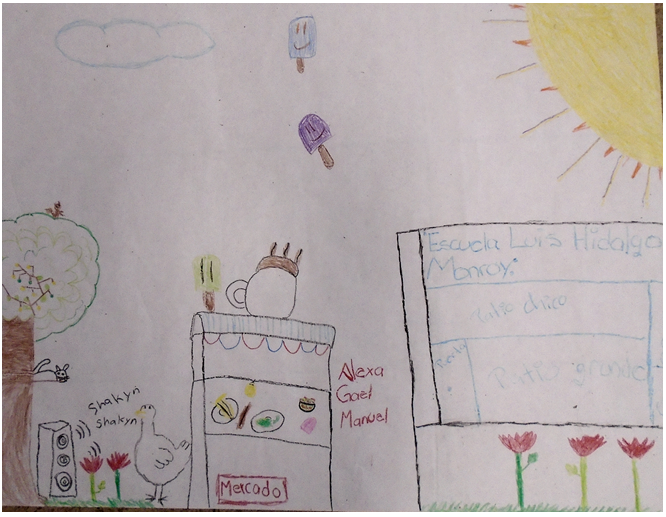
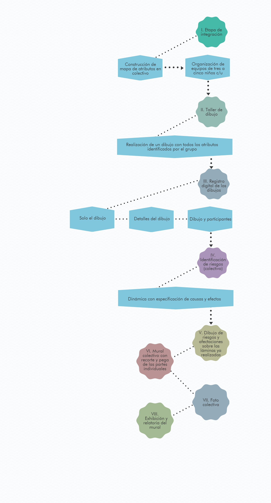
Las ilustraciones corresponden al taller realizado durante el pasado semestre, en la Escuela Primaria Pública Luis Hidalgo Monroy Calle Abasolo n° 36. El tema de estudio del semestre fue el mercado de Coyoacán.
1.- Identificar la escuela. Se busca que esté relacionada con el entorno patrimonial del proyecto, preferiblemente una escuela pública, con un grupo de sexto de primaria, maestro incluido. Hablar con el director, tratar de convencerlo de que el taller no cuesta nada, no es un negocio. Hacer la carta oficial, sellos, enviados y recibidos. Es tiempo, entonces, de hablar con el maestro, siempre algo más dispuesto; negociar fecha, hora y local, a fin de que ese día, temprano, se trapee el suelo del salón o patio donde los niños trabajarán. Esa etapa es larga y agotadora…no se desanimen.
2.- Inducción. Romper el hielo, lograr que el maestro entienda que se trata de un acercamiento “lúdico” y que no hay reglas estrictas, pero evitando que los 28 escuincles se transformen en una turba inmanejable.
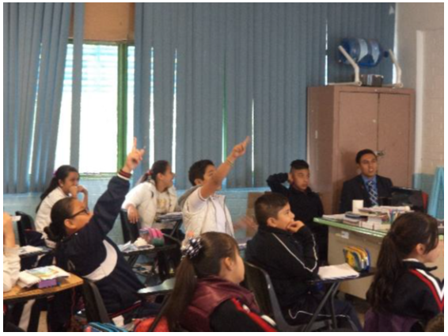
3.- Construcción de mapa mental con palabras. Mantener el orden es complicado, todos quieren poner algo. Tender al equilibrio entre bienes patrimoniales: naturales, construidos, inmateriales, con nombre propio. Aceptar que perros y gatos siempre son parte del sistema patrimonial.
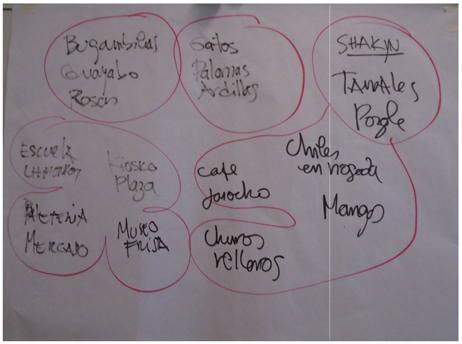
4.- Organizar grupos aleatorios. Grupos de tres o cuatro alumnos, mixtos preferiblemente (evitar las bandas de amigos, siempre con uno que hace de jefe). Llevar suficientes crayolas marcadores, sacapuntas, gomas y lápices (siempre hay quien quiere bocetar antes de usar colores). Todos al suelo.
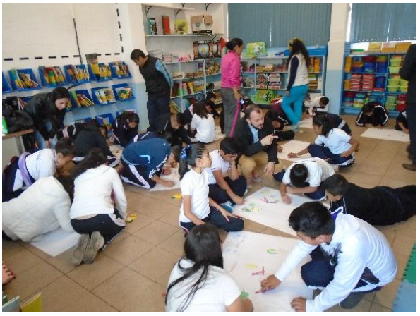
5.- Recreo y registro fotográfico. Organizar láminas para foto con los autores. Llevar algo de fruta para repartir (no Pingüinos ni Mamuts).
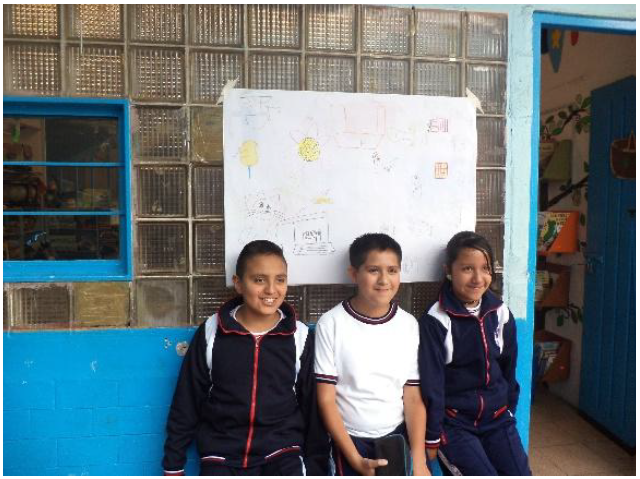
6.- Mapa de problemas: Identificar con palabras (en rojo) sobre el mapa mental, los problemas de los bienes identificados (siempre aparece como problema que hay gente que se orina en ellos, no se sorprendan).
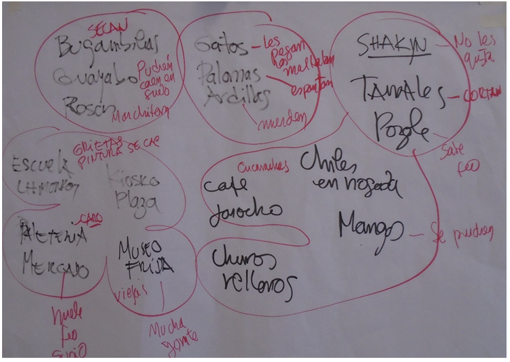
7.- Dibujo de los problemas. Sobre la lámina de bienes patrimoniales (en color rojo), hay que explicar que poner en rojo los problemas afectarán los dibujos bonitos, al igual que pasa en la realidad con los sitios y tradiciones. Insistir en que lo ideal es que no hubiera problemas, pero si los hay, los que trabajamos en patrimonio se resolverán. Las colas de gente de la Casa Azul que se aprecian en la imagen muestran que debe haber allí algún problema que hasta los niños lo identifican.
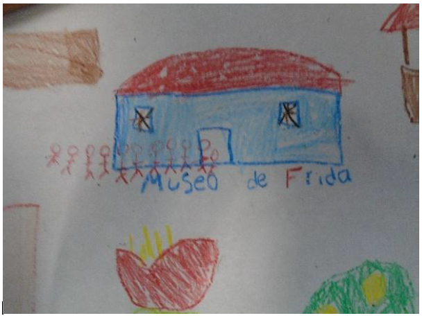
8.- Construcción del mural del patrimonio colectivo. Todos van recortando, por pedido, cada uno de los bienes, formado un caleidoscopio de lectura patrimonial. Se va ubicando cada uno en su relación geográfica o de lugar con el anterior (arriba, abajo, al lado, atrás, etcétera). Llevar suficientes tubos de pega.
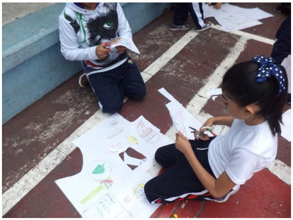
9.- Entra el equipo de limpieza y restauración. Un grupo de entre seis y ocho alumnos, escogidos entre aquellos con mayor capacidad artística y los más responsables (como debe ser la gente que trabaja en patrimonio), completa el mural. Con tipex líquido borran los problemas (antes dibujados en rojo), mientras otros completan el entorno, calles, árboles, gente, más perros y algunos otros gatos.
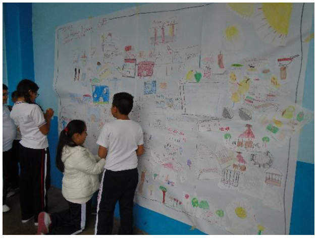
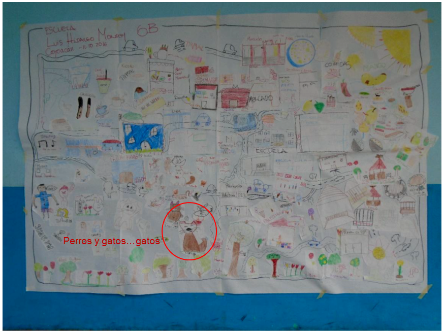
10. Foto colectiva. No se olviden de invitar al maestro, que para estas horas quién sabe a dónde fue mientras ustedes adelantaban el taller.
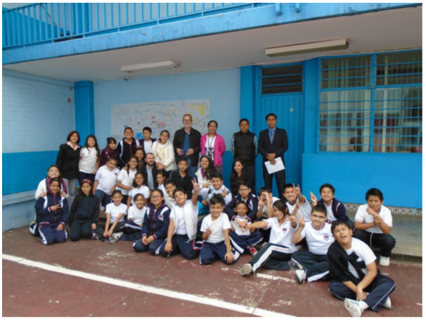
Seguimiento. Informe docente, analizando qué bienes patrimoniales son reconocidos y cuáles no, identificando los nuevos valores que surgen en el sitio. Evaluar la capacidad de representación gráfica de organización de grupos, así como de ortografía. Se invita al docente a que los alumnos expliquen a otros grados qué hicieron, y a estos a que muestren a sus padres el mural y les digan qué hay de valor en su barrio. Envío de fotografías digitales al maestro y a la Dirección.
Recordar al director que la valoración del patrimonio comienza por casa; por ejemplo, no utilizar el mural de los años cincuenta de la entrada (realizado de teselas de colores) para pegar los avisos al personal y a los padres.
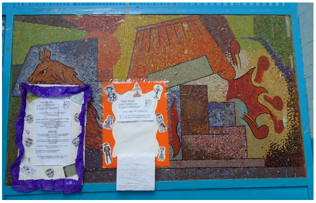